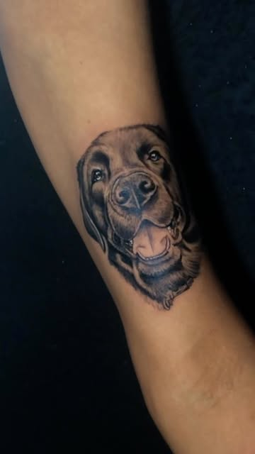
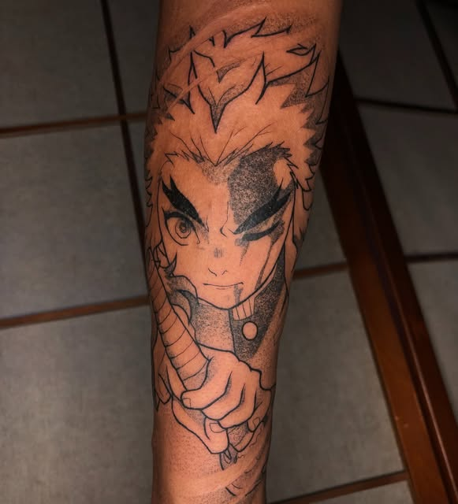
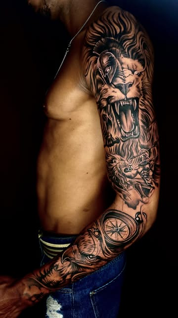
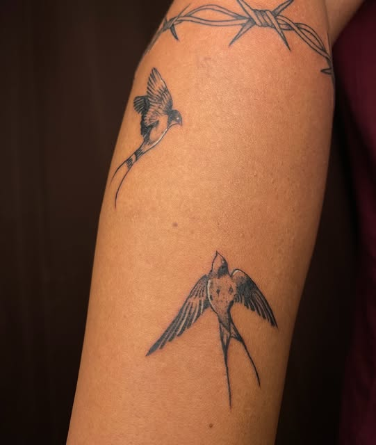

Mantenha protegida
Fique com o curativo pelo tempo que o tatuador indicar. Depois, lave com as mãos limpas, água e sabonete neutro, sem esfregar.
Tatuagem na Casa du Risco
Antes de morar na sua pele, toda tattoo passa por estes cômodos. É assim que uma ideia vira peça com o Nog ou com a Lilith.
No pedido você escolhe o artista, o estilo, o local do corpo, o tamanho e manda até cinco imagens de referência. Quer um flash? Ele já vem escolhido.
Mini realismo de pet: mande várias fotos nítidas do seu bicho, de frente e com boa luz.

O artista risca a arte pensando no seu corpo: encaixe, proporção e o que vai envelhecer bem. No flash, o desenho já existe e só ganha o tamanho e o lugar.

Você vê o desenho, pede ajustes e fecha valor e data na conversa. Na cobertura ou reforma de tattoo antiga, o Nog avalia a peça antes.
No dia marcado, a casa é sua: o horário fica reservado para a sua peça. Fechamentos de braço costumam pedir mais de uma sessão.

A tattoo termina em casa, na sua. Os cuidados das primeiras semanas decidem como ela fica para sempre: os principais estão logo abaixo.

Antes da sessão
Orientações gerais para o dia. Se o seu tatuador pedir algo diferente, vale o que ele disser.

Depois da sessão
Orientação geral de cuidados. O seu tatuador passa as instruções finais no dia, e são elas que valem.
Fique com o curativo pelo tempo que o tatuador indicar. Depois, lave com as mãos limpas, água e sabonete neutro, sem esfregar.
Uma camada fina da pomada ou do hidratante indicado, algumas vezes ao dia. Pele hidratada, não encharcada.
Coçou ou descascou? Não puxe. Arrancar a pele leva a tinta junto e falha o desenho.
Até cicatrizar, nada de sol direto, piscina, mar ou banho de banheira. Em Salvador, isso pede disciplina.
Tecido justo atrita e gruda na pele. Prefira roupa folgada sobre a tattoo nova.
Depois de cicatrizada, protetor solar na tattoo é o que mantém o preto preto e o traço fino nítido.
Perguntas frequentes
Não achou a sua? Mande no pedido, no campo "Algo mais".
Depende do tamanho, do local do corpo e do nível de detalhe, por isso tudo é sob orçamento. Pelo pedido do site você conta a ideia, manda referências e recebe o valor na conversa.
Pode. No pedido existe a opção "Trago meu desenho": anexe a imagem e o tatuador avalia se precisa de ajuste para funcionar na pele.
Peças pequenas costumam caber em poucas horas. Fechamentos e costas inteiras podem pedir mais de uma sessão. O tipo de sessão que você escolhe no pedido reserva o tempo certo na agenda.
Varia de pessoa para pessoa e de lugar para lugar. Regiões com osso perto da pele (costela, pé, coluna) costumam incomodar mais. Ir descansado e alimentado ajuda bastante.
É um desenho que o artista já criou e deixou pronto para tatuar. Na Casa du Risco, cada artista tem os seus: os do Nog no destaque "Disp. NOG" e os da Lilith no "Disp. LILITH". No site, é só tocar em "Quero esse flash".
Dá: cobertura e reforma estão no trabalho do Nog. Escolha "Cobertura ou reforma" no pedido e mande uma foto da tattoo atual.
A forma de reservar é combinada direto com o tatuador na conversa do orçamento.
Com o código do pedido você cancela pelo próprio site até 2 horas antes, e o horário volta para a agenda. Depois disso, chame no Instagram.
Escolha com quem, conte a ideia e mande as referências. Leva uns dois minutos.